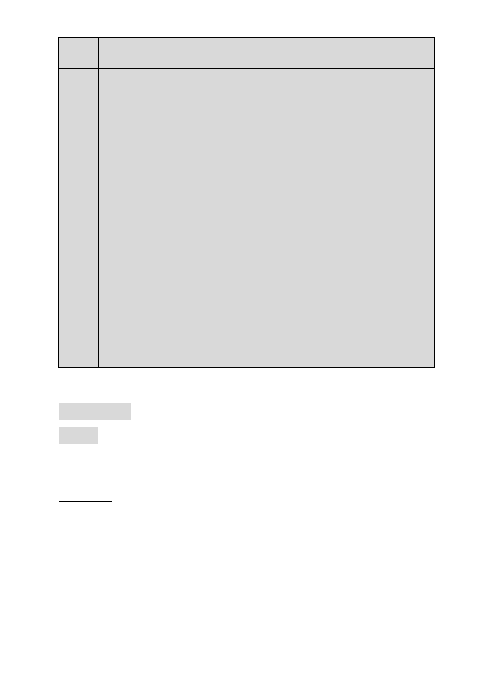

案名
委員
會決
議
變更臺北市士林區福林段二小段 593 地號土地住宅區為大專用地
（國立陽明大學）主要計畫案
本案除以下幾點修正意見外，其餘依公展計畫書、圖內容通過。
一、依本次會議補充資料，於計畫書第 9 頁增訂實驗室安全等級
僅限於第一級危險群生物材料等相關規定，都市設計管制及
都市防災規劃標題項次配合調正。
二、計畫書第 9 頁都市設計管制，修正為以下幾點：
(一)計畫區北側退縮 3.64 公尺建築，留設作為無遮簷人行道。
(二)計畫區南側留設緩衝綠帶(寬五公尺)，除配置植栽綠化與防
救災設施外，應儘量維持原地形地貌，且不得開挖地下室。
(三)計畫區西側留設之空地應加強綠化。
(四) 其餘有關開放空間及建物配置、高度、造型等事項，依本府
93 年 2 月 23 日府都二字第 09305141100 號公告發布實施之「擬
訂臺北市士林官邸北側住宅區細部計畫案」內都市設計管制要
點有關本計畫區範圍之規定辦理(請檢附前開 93 年 2 月 23 日
公告之管制要點內容為附件三，以利查考)。
(五)本計畫區須經本市都市設計及土地使用開發許可審議委員會
審議通過後始得核發建築執照。
三、計畫書第 15 頁(二)綠化原則及第 16 頁(三)建築物設計原則，
請修正序號。
四、本案公民或團體陳情意見，申請單位及市府回應詳綜理表，
審決同以上所列決議。
審議事項 三
案名：變更臺北市大同區大龍段一小段 264-13 地號等 25 筆土地
第三種商業區(特)為交通廣場用地、道路用地為第三種商
業區(特)及交通廣場用地細部計畫案
案情說明：
一、計畫範圍與面積：
位於大同區與中山區交界，在圓山捷運站西側地區，為庫倫
街 61 巷、承德路三段、承德路三段 283 巷與庫倫街所圍街廓，
其中不含西南隅 102 年興建完成地上 12 層皇翔玉璽住宅大樓
及西北隅建照 79 年地上 10 層美源統帥辦公大樓。面積為
6,599 平方公尺。
- 165 -